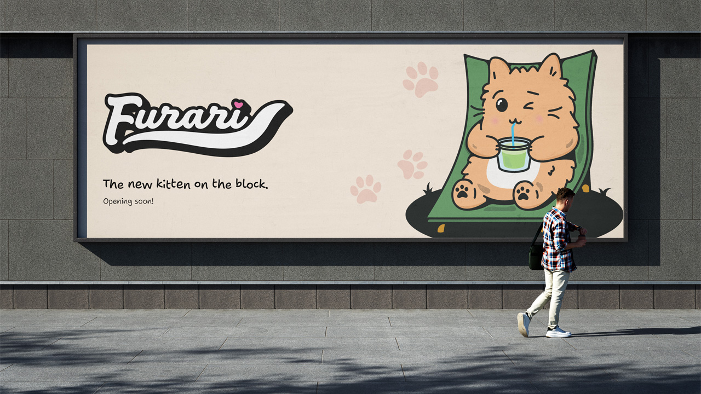
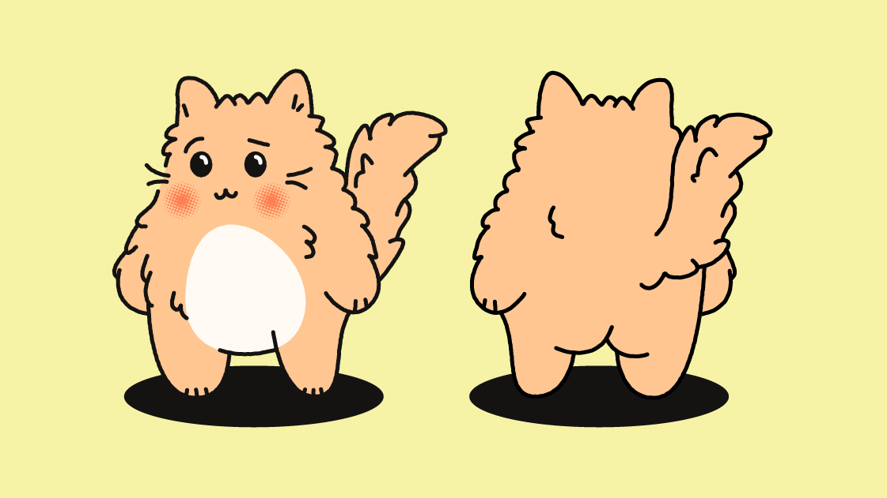
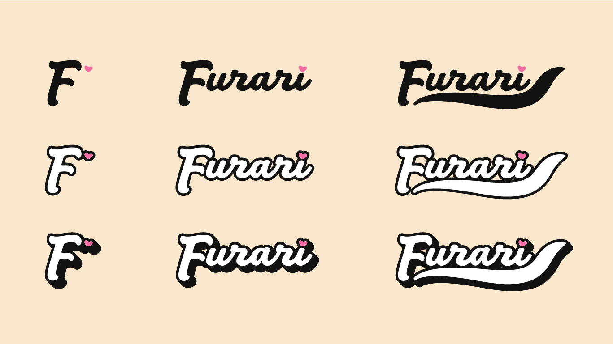
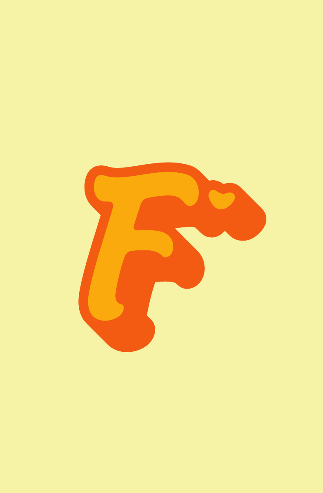
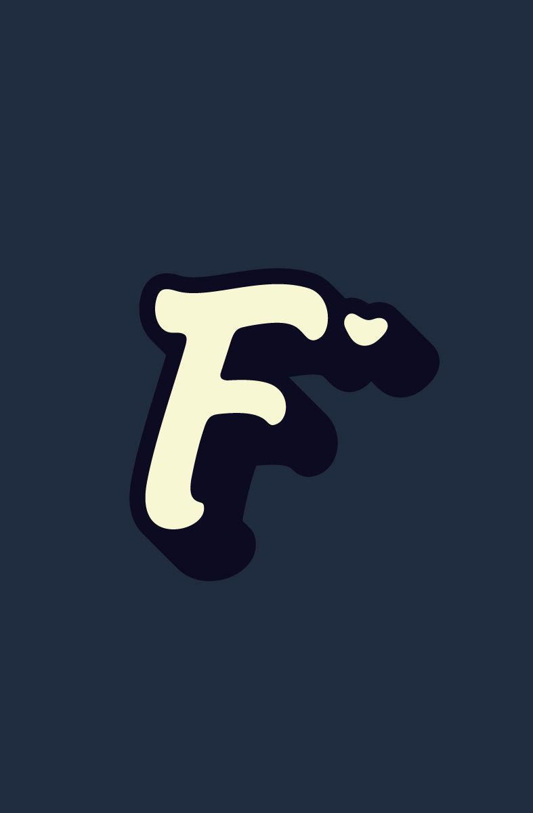
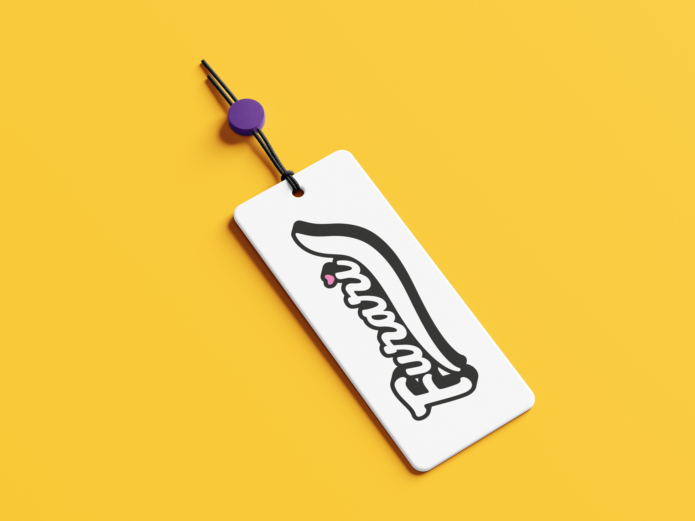
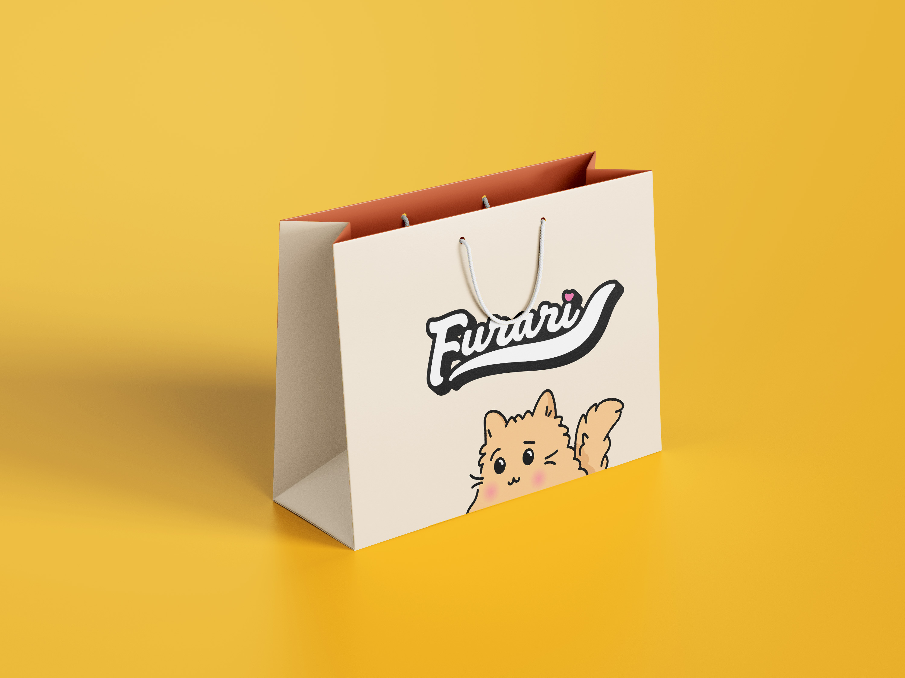
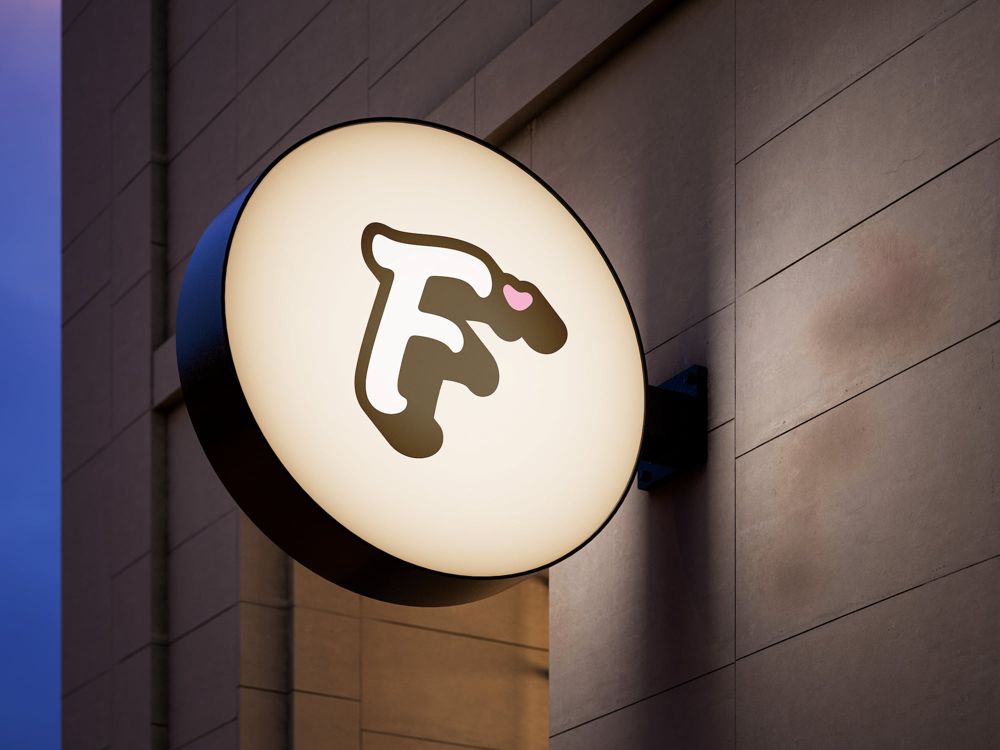

The concept of cute animals on t-shirts was done countless times before, especially in Indonesia. The approach to this trend is normally falls on either the forestry/jungle side or the domesticated cute side. I knew in order to appeal to audiences, we needed a fresh plan - something that struck the in-between but also added another element.
There were now two challenges for me: to incorporate all themes into one mascot and figure how it all makes sense in one brand. I pushed out the sweetest, pleasing visuals and while referencing organic curves to my artwork. I consistently keep in mind of the platform this will be primarily marketed to, Instagram and Facebook.

The concept of cute animals on t-shirts was done countless times before, especially in Indonesia. The approach to this trend is normally falls on either the forestry/jungle side or the domesticated cute side. I knew in order to appeal to audiences, we needed a fresh plan - something that struck the in-between but also added another element.
There were now two challenges for me: to incorporate all themes into one mascot and figure how it all makes sense in one brand. I pushed out the sweetest, pleasing visuals and while referencing organic curves to my artwork. I consistently keep in mind of the platform this will be primarily marketed to, Instagram and Facebook.



The concept of cute animals on t-shirts was done countless times before, especially in Indonesia. The approach to this trend is normally falls on either the forestry/jungle side or the domesticated cute side. I knew in order to appeal to audiences, we needed a fresh plan - something that struck the in-between but also added another element.
There were now two challenges for me: to incorporate all themes into one mascot and figure how it all makes sense in one brand. I pushed out the sweetest, pleasing visuals and while referencing organic curves to my artwork. I consistently keep in mind of the platform this will be primarily marketed to, Instagram and Facebook.





The target demographic for these products are normally a fond of current trends. My client and I hopped on many discussions to plan out the strategy to creating the mascots.
Believe or not, the direction of this project was very different at the start; aiming for a petite and rounded approach. The outcome was something pure. Oddly, this was not quite fitting to hit the target audience - too mainstream and too forgettable.
We explored the quirky nature of the regular house cat - unbothered, domesticated, but always up to something. We took those ideas and came up with two ideas we found the strongest.
